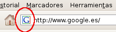

12 Extras
Extras
Icono en la barra de navegación del explorador
Para añadir un icono que se muestre en la barra de navegación del navegador, se utiliza la siguiente etiqueta, que deberá incluirse en la cabecera de la página web:
Hay que sustituir nombre_icono.ico por la ruta al archivo que contenga el icono que se pretenda incorporar. Este archivo deberá tener la extensión .ico. Normalmente un archivo de 12x12 o 60x60. Puedes encontrar un enlace a una web con gran variedad de iconos para descargar en la sección de bibliografía.
El aspecto de la barra de navegación será el siguiente:

En los sitios web únicamente es necesario incorporar esa etiqueta a la página principal del sitio para que se muestre en todas las demás.
Redirección automática a otra página
Para que una página se redirija automáticamente a otra, hay que introducir la siguiente etiqueta en la cabecera del documento HTML:
Hay que sustituir numero_de_segundos por el número de segundos que tardará en producirse la redirección (si se pone el valor 0, la redirección se producirá en cuanto se cargue la página) y web_de_destino por la dirección web que se cargará cuando se agote el tiempo.
Objetos Multimedia
Actualmente la idea de muchos creadores es ir retirando Flash y aprovechar las nuevas capacidades de HTML 5 para la multimedia.
Problema Multimedia
El problema es que hay numerosos formatos de video y audio y que cada navegador tiene capacidades distintas al respecto. Por ello muchos usuarios conocedores de estos problemas saben que en los ordenadores hay que instalar plugins (extensiones) para poder ver videos u oir música. El navegador buscará si disponemos del plugin apropiado para ver el vídeo, si no es así simplemente lo descargará en nuestro ordenador al no poder mostrar el contenido.
<video> y <audio>
Atributos:
- src: URL del vídeo a reproducir
- poster: para visualizar una imagen mientras no está disponible el vídeo
- autoplay: booleano que indica la reproducción automática del vídeo
- loop: booleano que indica la repetición automática del vídeo
- controls: booleano que indica al navegador que incorpore controles de usuario
Los formatos de video a utilizar más habituales son: ogg, mp4, matroska (mkv,mka,mks) y audio ogg, mp3, etc.
Codecs. Elemento source
Se denomina codec (de codificar, decodificar), al software que se usa para crear los videos. Un video actual usa un formato comprimido de datos, por lo que para crearlos se codifican los datos y para mostrarlo, se decodifica.
Eso significa que para ver un video en un formato concreto, se necesita el codec apropiado. Para más inri, cada navegador incorpora unos codecs. HTML 5 ha conseguido subsanar la situación, mediante la etiqueta source.
La idea es que el video se codifica en varios formatos distintos y luego les hacemos referencia dentro de la etiqueta video y el navegador usará el formato que sea capaz de traducir (del que disponga de codecs).
El elemento source fundamentalmente dispone de dos atributos: src para indicar la URL que nos lleva al video y type que indica el tipo MIME del video. Además dentro del tipo MIME se pueden indicar los
codecs concretos que necesitamos para decodificar el video.
La idea es la siguiente:
<video autoplay="autoplay" controls="controls" poster="foto1.jpg">
<source src="video.mp4" type="video/mp4;codecs='avc1.42E01E, mp40a.40.2' " />
<source src="video.ogv" type="video/ogg;codecs='theora, vorbis' " />
El navegador no puede mostrar el vídeo
</video>
<video autoplay="autoplay" controls="controls"> <source src="video.mp4" type="video/mp4"/> El navegador no puede mostrar el vídeo </video>
Así se verá:
<audio controls="controls"> <source src="audio.ogg" type="audio/ogg"> <source src="audio.mp3" type="audio/mpeg"> El navegador no puede mostrar el audio </audio>
Así se verá:
<object>
Inserta un objeto en el documento y permite incorporar cualquier tipo de contenido a una página web. El tipo de objeto viene determinado por sus atributos y puede ser una imagen, un applet de java, un vídeo, una animación flash, otro documento HTML (aunque se puede hacer con iframe), etc..
Atributos
- data:Indica la URI donde están los datos del objeto.
- type:Indica el tipo de datos especificados en data. La sintaxis es: type="categoria/formato". Ejemplo: audio/basic, audio/mpp3, video/mpeg, video/quicktime, application/x-shockwave-flash, etc.
- archive:Es una lista de URIs (separada por espacios) donde hay archiivos útiles para el objeto.
- standby:Es un texto que presenta el navegador durante la carga de los datos.
- height, width: alto y ancho del objeto
- name:Nombre para designar el elemento
<param>
Sirve para inicializar variables de objetos que serán utilizadas en tiempo de ejecución. No tiene etiqueta de cierre. Elemento interior a object, que permite especificar parámetros a los plugins de los navegadores encargados de mostrar el objeto. A través de param pasamos instrucciones al plugin que reproduzca el objeto. La forma es mediante los atributos name (en el que se indica el nombre del atributo) y value (valor del atributo)
Atributos
- name:Indica el nombre de un parámetro de ejecución.
- value:Indica el valor inicial del parámetro especificado en name.
- valuetype:Indica el tipo del atributo value (data|ref|object).
- standby:Es un texto que presenta el navegador durante la carga de los datos.
- type:Indica el tipo del recurso cuando valuetype="ref".
Sintaxis
<param name="nombre de parámetro" value="valor de parámetro">
La lista de parámetros depende del tipo de objeto, algunos son: FileName para el nombre del archivo, quality para la calidad de imagen, wmode para el fondo, allowFullScreen para pantalla completa, swfversion para la versión de Flash Player, etc...
Ejemplo: Insertar un video.
<object data="../imagenes/video.mp4" width="425" height="350"> </object>
Aparece así:
Insertar un pdf:
<object width="425" height="350" data="./15_guia_html.pdf"> </object>
Aparece así:
Manual de HTML - CSS - Lenguaje de Marcas - DAW-ASIR